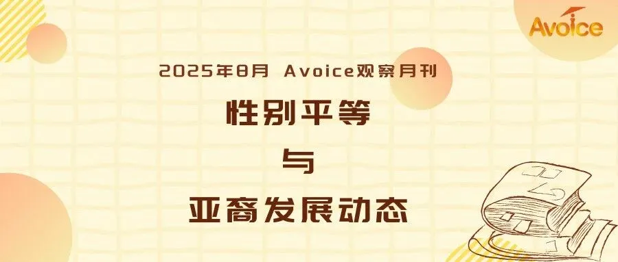

引言
八月，性别平等从倡导走向硬性约束。 澳大利亚高校反性别暴力法，苏格兰警队厌女文化被揭与问责，以及巴新女性以积极行动重建安全，呈现了由制度到问责再到社区层层推进和合力进步。但针对亚裔的暴力与歧视仍持续引发警讯，南加家暴命案撕开体面婚姻下的隐形伤害，爱尔兰多起袭击震动移民社群，舞台选角风波折射公共空间里对亚裔身体与尊严的再争夺，提醒我们将安全与反偏见教育并举。同时，亚裔话语权在媒体、政治与教育场域同步加权， Lucy Liu 获 AAJA “Visibility Award”，南亚联盟在新泽西组织化动员，且全美已有 23 个州将亚裔美国人历史纳入 K-12 课程。从制度到文化，从校园到社区，唯有把安全与尊重写进规则，亚裔与所有人的尊严与话语权才会在公共空间里被真正看见与保障。
目录
Table of Contents
一、性别平等
News on Gender Equality
澳大利亚强硬推行高等教育防性别暴力新规定
苏格兰警察被曝性别歧视
巴布亚新几内亚女性打破遭受暴力的恶性循环
二、针对亚裔的犯罪
Crimes against Asian Community
南加州韩裔男子用平底锅打死并焚尸华裔医生妻子
爱尔兰移民社区遭遇暴力袭击潮
百老汇《Maybe Happy Ending》因让白人演员代替亚裔角色演出引发争议
三、亚裔话语权
Voice of Asian
Lucy Liu在亚洲裔记者协会（AAJA）年会上荣获“Visibility Award”奖项
南亚联盟在新泽西政治动员
亚裔美国人历史教育被纳入美国23个州K-12公立学校课程体系
01
性别平等
News
澳大利亚强硬推行高等教育
防性别暴力新规定
澳大利亚联邦议会于2025年8月25日正式通过立法， 确立全国性的《高等教育预防与应对性别暴力守则》（National Higher Education Code to Prevent and Respond to Genderbased Violence），该守则规定了各高等教育机构与负责人不仅要对暴力行为实施正确措施，更要对性别暴力进行有效预防。
这一守则的意义不仅在于立法规制，也在推动大学文化变革。 倡导机构Our Watch赞赏这次立法是多年努力的历史性转折，强调“预防不是可选项，而是每个机构的核心职责”；相关措施旨在解决制度性和结构性驱动因素，如性别不平等、刻板偏见及社会文化压力等。这意味着校园安全从单纯应对扩展为主动塑造尊重、安全与平的环境。
消息来源：
New legislation key to preventing gender-based violence in higher. Our Watch. https://www.ourwatch.org.au/news/new-legislation-key-to-preventing-gender-based-violence-in-higher-education
News
苏格兰警察被曝性别歧视
一份独立采访组织的深度审查报告揭示，苏格兰警察局存在系统性的性别歧视与厌女文化。报告指出，警队内部盛行“兄弟会”式氛围，女性警员常受到上级男性的不当玩笑、评论与轻视。更严重的是，提出异议的女性往往担心遭遇报复或升迁受阻，形成了沉默与妥协的恶性循环。
调查还发现，部分高级警官对性别歧视行为视而不见，甚至纵容。现象包括男性下属拒绝执行女性上级命令，以及部分高阶男警官与年轻女警员建立“掠夺性关系”。这种文化导致女性警员经常怀疑自己的外表是否会“招致”性别化言论，进一步强化了不安全感。
在外部压力下，Police Scotland 承认问题的严重性，并承诺推动“有意义的文化改革”。然而，报告的隐匿和迟迟未公开，引发了社会对透明度和警队治理的担忧。法律专家与维权团体强调，若缺乏公开问责，公众对执法机构的信任将进一步受损。
消息来源：
BBC News. (2025, August 26). Report finds evidence of Police Scotland misogyny.
https://www.bbc.com/news/articles/cx29j3v5dq7o
News
巴布亚新几内亚女性
打破遭受暴力的恶性循环
在巴布亚新几内亚，约三分之二的女性一生中会经历暴力，家庭暴力、性侵害以及因“巫术”指控导致的杀害案件普遍存在，法律虽有规定但执行力薄弱，社会普遍将其视为“私人事务”。今年几起女性惨遭杀害的案件更引发全国关注和抗议。
面对根深蒂固的文化与制度困境，多位女性领袖和幸存者正在开展草根行动。前运动员 Tahina Booth 通过“Grass Skirt Project”利用体育项目推动性别平等和冲突解决，目标到 2050 年影响 100 万青年。Betty Awo 在 Morobe 省以志愿者身份走村串户，为受害者写证词、提供临时庇护并举办防暴讲座，让儿童和村庄敢于发声。Maureen Mokai 在 Hela 省组织“和平计划”帮助暴力幸存者和青年重建生活，减少冲突。
性别暴力不仅是个人悲剧，更是制度性失败。总理 James Marape 称之为“威胁国家的流行病”，呼吁未来 50 年以尊重女性为社会发展的基石。尽管资源有限，女性倡导者的努力显示出社会正逐步转变：越来越多社区领袖和家庭开始公开讨论暴力，并尝试改变习以为常的观念。
消息来源：
Harrison, V. (2025, August 27). The women breaking the cycle of violence in Papua New Guinea. The Guardian.
https://www.theguardian.com/world/ng-interactive/2025/aug/27/reducing-violence-against-women-png-papua-new-guinea
02
针对亚裔的暴力
News
南加州韩裔男子
用平底锅打死并焚尸华裔医生妻子
2025年1月6日，在美国加州圣马力诺，63岁韩裔男子赖允（Yoon “Kevin” Lai）在家中残忍杀害与其为夫妻关系的华裔医生高艾琳（Irene Gaw-Lai）。警方发现他将受害人用钝器击打致死后纵火焚尸，现场留下血迹斑斑的平底锅和金属棒球棒作为凶器。
高医生是社区内声誉良好的内科医师，家庭表面光鲜，居住在价值260万美元的豪宅，与赖允结婚22年，育有一对16岁双胞胎。但事实上两人婚姻长期矛盾重重。案发前，高医生因发现赖允隐匿房产，向法院申请废除婚前协议并提出离婚要求，并曾向亲人表达担忧“与他单独相处时不觉得安全”。
案发后，赖允一度以225万美元保释金获释，否认所有指控，但已被控一级谋杀和纵火罪。案件震动南加华人社会，引发对家暴问题的深切反思。报道强调，施暴者往往隐藏在“体面婚姻”的外表之下，凸显出家庭暴力的隐蔽性与破坏力。
消息来源：
震惊！南加知名华裔医生被丈夫平底锅打死焚尸，施暴者就藏在体面的婚姻里！. (2025, August 8). 华人生活网.
https://mp.weixin.qq.com/s/vvtGPat2i4b5tbsNXl6sOQ
News
爱尔兰移民社区遭遇暴力袭击潮
最近，爱尔兰接连发生多起针对印度裔和其他移民的暴力事件，引发社会恐慌。在都柏林 Tallaght 区，一名印度男子被青少年围殴、部分脱衣并被拍摄视频；随后另一名印度男子在 Clondalkin 被多人殴打致骨折和多处伤口；几天后，在 Ballymun，两名乘客袭击了一名印度裔出租车司机，用瓶子击打其脸部并辱骂“滚回你的国家”；而在沃特福德郡，一群年轻男子围殴一名 6 岁印度裔女童，拳打、用自行车击打其生殖区域，并同样辱骂“滚回印度去”。
这些暴力事件震惊移民社区。印度大使馆提醒公民加强安全防范，避免前往偏僻区域。印度社群则在司法部外举行静默抗议。印度媒体对此进行突出报道，许多在爱尔兰的移民表示，他们原以为这里是一个安全、友善的国家，如今却深感不安。
报道指出，爱尔兰自 1990 年代以来移民人口大幅增加，占全国人口的五分之一。近年住房危机和社会紧张情绪助长了排外情绪。 人权倡导者呼吁加强警方行动、完善仇恨犯罪立法，并推动反种族主义教育。与此同时，极右翼仍属少数派，但相关集会和攻击视频在社交媒体上流传，加剧了恐惧氛围。
消息来源：
Carroll, R. (2025, August 11). ‘Why is this happening?’: violent attacks terrify Ireland’s immigrant community. The Guardian.
https://www.theguardian.com/world/2025/aug/10/violent-attacks-ireland-indian-immigrants
News
百老汇《Maybe Happy Ending》 因让白人演员代替亚裔角色演出引发争议
百老汇浪漫喜剧音乐剧《Maybe Happy Ending》因选角问题引发巨大争议。原主演、亚裔背景的 Darren Criss 暂时退出后，制作方宣布由白人演员 Andrew Barth Feldman 接替男主角。这一决定被批评为“狠狠打了艺术社群的脸”，引起艺术群体的强烈反弹 。
亚洲裔表演者行动联盟（AAPAC）、亚洲裔剧院与艺术家联盟（CAATA）以及多位知名演员（如 BD Wong、Conrad Ricamora、Ruthie Ann Miles 等）公开谴责，认为此举是对亚裔社区的“侮辱”。超过 2,400 人签署公开信要求制作方重新考虑，包括 Awkwafina、Bowen Yang、Donna Murphy 等知名艺人。
批评者指出，该剧背景设定在未来首尔，原本由亚裔演员主演具有强烈的象征意义。 与此同时，部分业内人士认为这揭示了百老汇整体缺乏亚裔代表性的问题：尽管纽约市亚裔人口占比达 14.5%，但百老汇演员中亚裔仅占 3.7%，音乐剧主角中仅 2.8% 。
消息来源：
Kennedy, M. (2025, August 29). Casting controversy hits Broadway as Darren Criss exits rom-com | AP News. AP News.
https://apnews.com/article/broadway-happy-ending-casting-controversy-7f8885b45c734dc8779cc22f7aa69b79
03
亚裔话语权
News
Lucy Liu在亚洲裔记者协会（AAJA）
年会上荣获“Visibility Award”奖项
2025 年 8 月 2 日，演员兼联合国儿童基金会大使Lucy Liu在美国西雅图举行的亚洲裔记者协会（AAJA）年会上荣获“Visibility Award”奖项。她在致辞中强调，AAJA 自 1981 年以来不仅提升了亚裔声音，更在新闻与社会叙事中保护这些声音。她指出：“我们不是别人故事中的脚注，而是自己故事的作者。”
在发言中，Liu 表示 AAJA 的努力让亚裔在社会中无法被忽视，并提醒亚裔与太平洋岛裔（AANHPI）创作者无需“获得许可”才能在公共叙事中存在。这一发声强化了亚裔在媒体与文化产业中代表性的重要性。
会议还表彰了其他杰出人物，包括入围普利策奖的菲裔记者Nicole Dungca，以及多位亚裔新闻前辈与作家。
消息来源：
Sohrabji, S., & Nrueda. (2025, August 9). Actress Lucy Liu joins Fil-Am Pulitzer finalist at AAJA awards gala. INQUIRER.net USA.
https://usa.inquirer.net/176907/actress-lucy-liu-joins-fil-am-pulitzer-finalist-at-aaja-awards-gala
News
南亚联盟在新泽西政治动员
南亚联盟（South Asian Coalition）于8月25日在新泽西州Pennington举办了一场“Meet & Greet”活动，邀请州长候选人Jack Ciattarelli出席。活动吸引了300多名与会者，包括独立选民、社区领袖和南亚裔侨团成员，展现了南亚裔社区在当地政治中的日益影响力。
联盟主席Sridhar Chillara在致辞中强调南亚裔应积极投票、发声，避免因投票率低而被边缘化。执行主任Pavan Kuchana也指出，只有集体行动才能真正塑造新泽西的未来。活动还宣布将斯里兰卡裔群体正式纳入联盟，进一步扩展其代表性。
Ciattarelli在会上提出了多项政策愿景，重点包括改善教育和医疗，并表示将优先考虑有利于南亚裔社区的举措。 这次活动不仅体现了南亚裔群体的团结和政治动员能力，也标志着他们在新泽西政治舞台上正逐步成为不可忽视的力量。
消息来源：
Writer, A. S. (2025, August 25). South Asian Coalition Hosts Jack Ciattarelli Meet & Greet - News India Times. News India Times.
https://newsindiatimes.com/south-asian-coalition-hosts-jack-ciattarelli-meet-greet/
News
亚裔美国人历史教育被纳入
美国23个州K-12公立学校课程体系
截至2025年8月，美国已有23个州通过立法或学术标准，将亚裔美国人历史纳入K-12公立学校课程体系。其中13个州有明确法律要求，另有10个州通过学术标准规定必须教学亚裔历史。这一进展反映出亚裔历史教育在全美范围内获得前所未有的制度化支持。
Committee of 100主席Paul Cheung强调，亚裔美国人200多年来一直是美国历史的重要组成部分，但因“永久外国人”刻板印象，往往被教育体系忽视。他指出，公共教育是培养知情公民的关键，而忽略亚裔历史会导致学生无法全面理解美国的多元经验。
同时，最新的公众调查显示，约70% 的美国人认为课程中应包含亚裔历史。这种社会共识推动了政策变化，也表明公众正日益认可亚裔在美国叙事中的应有地位。
消息来源：
More students than ever learning Asian American history as 23 states adhere to Asian American History Requirements - Committee of 100. (2025, August 28). Committee of 100.
https://www.committee100.org/media-center/more-students-than-ever-learning-asian-american-history-as-23-states-adhere-to-asian-american-history-requirements/
内容来源｜学术研究处
撰稿｜董雨昕
排版&封面｜吴雨桐